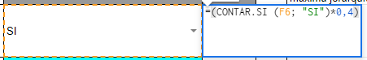
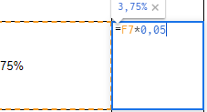
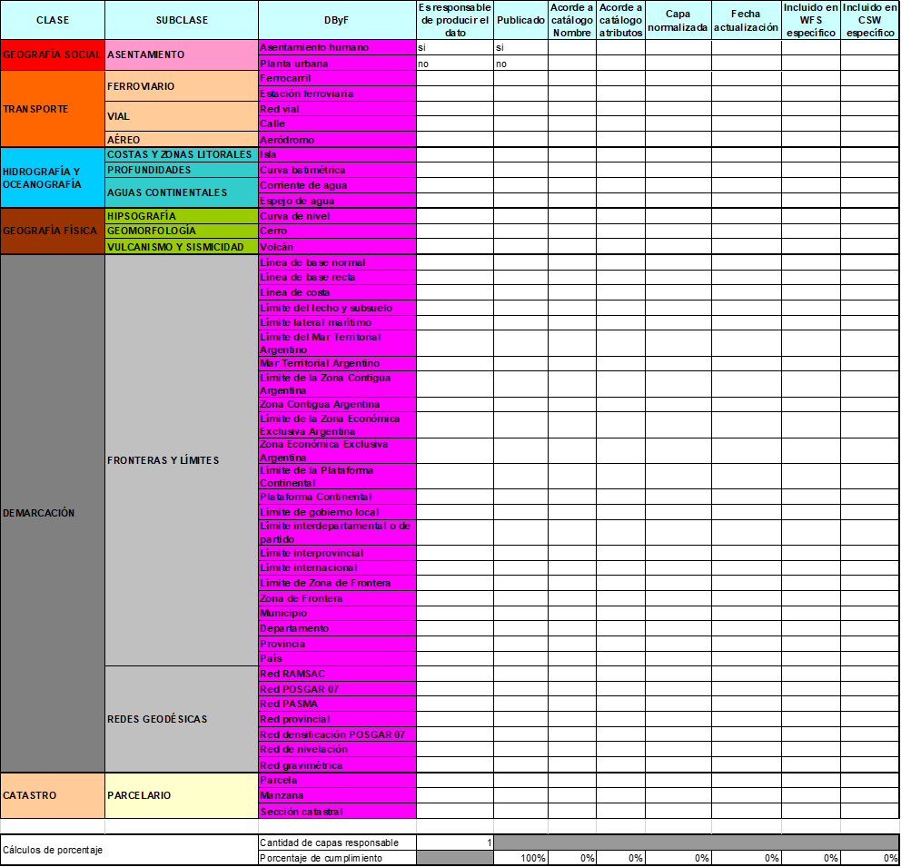
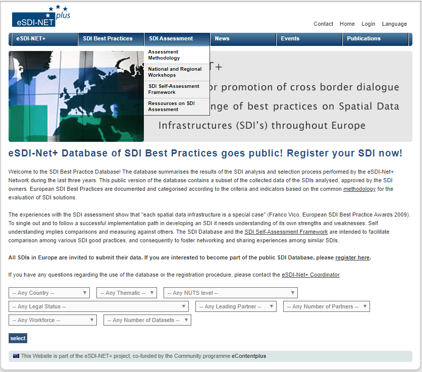

La evaluación de IDE de IDERA¶
Sugerencias para la implementación¶
En base a las propuestas de mejoras desarrolladas en la sección anterior, se presentan, entonces, las siguientes sugerencias para su implementación efectiva en la evaluación de IDE de IDERA.
Así, en primer lugar, se desarrolla una estructura para el esquema de evaluación con el objetivo de facilitar la asignación de los valores correspondientes a la IDE, en los distintos indicadores que se evalúan.
En segundo término, se presenta un ejemplo de la propuesta de dotar al informe anual de un formato de formulario, de modo tal que resulte más sencillo de responder para los responsables de las IDE, a la vez que permita un mejor procesamiento estadístico de las respuestas obtenidas.
Como tercera cuestión, se muestra un modelo de base de datos que podría resultar de utilidad para dar seguimiento a la totalidad de los nodos IDE que integran IDERA, y no solamente a las IDE de máxima jerarquía que resultan pasibles de evaluación.
Finalmente, se da cuenta de la potencia de una herramienta, basada en software libre y de código abierto, para el monitoreo de la salud de los geoservicios de las IDE de IDERA, entre otros posibles usos.
Estructura facilitadora del esquema de evaluación¶
Se sugiere modificar la estructura del esquema de evaluación (archivo de hojas de cálculo), incorporando una serie de elementos tendientes a lograr que la tarea de dar cuenta de su situación respecto a los distintos indicadores contemplados en la evaluación, resulte más sencilla para los responsables de las IDE de máxima jerarquía, como así también para la persona de la Coordinación Ejecutiva encargada de realizar la evaluación.
Así, se propone generar una tabla dividida en distintas hojas (Figura 2), una para cada uno de los cuatro temas que forman parte de la evaluación de IDE de IDERA y, además:
-
Cuadro de indicadores para Productor de DByF.
-
Cuadro de indicadores para Productor de datos Temáticos.
-
Cuadro de elementos a evaluar de Geoportal y Visualizador
-
Tabla de DByF para evaluar por cada capa
-
Resumen de calificación por tema y calificación final
Figura 2 - Miniatura del Esquema de Evaluación

Fuente: elaboración propia en base al relevamiento realizado por el Instituto Geográfico Nacional
Asimismo, también resulta de utilidad incorporar un cuadro de indicadores separados por tema (Figura 3), que incluya las fórmulas correspondientes, como otro elemento que contribuya a facilitar y mejorar el análisis.
Figura 3 - Detalle de fórmula por temas

Fuente: elaboración propia en base al relevamiento realizado por el Instituto Geográfico Nacional
De esta forma, es posible visualizar mejor la sumatoria de los resultados de cada tema, según surge de los respectivos cuadros.
Figura 4 - Detalle de listado de opciones variables binarias

Fuente: elaboración propia en base al relevamiento realizado por el Instituto Geográfico Nacional
Así, se propone un conjunto de fórmulas que permiten asignar el puntaje correspondiente en los indicadores cuyas respuestas posibles son “Sí” o “NO” (Figura 4 y 5).
Figura 5 - Ejemplo de fórmula para variables binarias

Fuente: elaboración propia en base al relevamiento realizado por el Instituto Geográfico Nacional
Del mismo modo, para las variables cuyos resultados se calculan en razón del porcentaje de capas que cumplen con la respectiva recomendación, es útil usar fórmulas del tipo que se muestra en la siguiente figura (Figura 6).
Figura 6 - Ejemplo de fórmula para el cálculo del porcentaje de capas


Fuente: elaboración propia en base al relevamiento realizado por el Instituto Geográfico Nacional
La solapa de DByF (Figura 7) permite seleccionar las capas que publica, como DByF, cada organismo y determinar si cumple o no con las condiciones requeridas, incluyendo una fórmula que posibilita calcular el porcentaje de cumplimiento por indicador.
Figura 7 - Solapa de DByF de la Evaluación IDE v2

Fuente: elaboración propia en base al relevamiento realizado por el Instituto Geográfico Nacional
El informe anual como un formulario¶
Vale recordar que el informe anual consiste en una serie de ítems de información que se le solicita a la IDE sobre sus características y su situación. Algunos de estos requerimientos son sencillos de responder, en formato de texto plano o hipervínculo. Pero en otros casos, se necesita más información, lo que implica subir una imagen u otro tipo de archivo.
La posibilidad de utilizar para este proceso un formulario de Google (Figura 8) presenta como ventajas que permite introducir restricciones a la forma de responderlo, incluyendo listas de opciones de respuesta que hacen más fácil completarlo. También, esta herramienta hace que la información se vuelque de manera automática en una tabla, que luego permite su rápido procesamiento y generar diversos reportes estadísticos.
En contraposición, los formularios de Google presentan algunas desventajas. Por ejemplo, el hecho de que la opción de subir un archivo, obliga, a quien lo haga, a loguearse con su usuario de Google. Además, el formato de estos formularios es poco intuitivo y no permite realizar múltiples ediciones.
De este modo, aunque se reconoce que no hay una solución del todo óptima para el envío del informe anual por parte de las IDE, se propone seguir explorando las posibilidades que ofrece el uso de formularios de Google1 para esta tarea.
Figura 8 - Ejemplo de formulario de Google para informe anual

Fuente: elaboración propia en base a IDERA y Google.
La Base de Datos de IDERA¶
Siguiendo el ejemplo de la experiencia de eSDI-NET+ (Figura 9) detallada en el estado del arte del presente trabajo y teniendo en cuenta la cantidad de nodos IDE existentes en la Argentina, resultaría muy valioso realizar un seguimiento, a lo largo del tiempo, no sólo de las IDE de máxima jerarquía, sino de todas, teniendo en cuenta que cada IDE tiene que ser responsable de informar sobre los nodos que la componen.
Figura 9 - Base de datos de eSDI-Net+

Fuente: eSDI-Net+ Database of SDI
Por otro lado, el uso de una base de datos permitirá mejorar la manera en que se actualiza la información, pudiendo inclusive generar algún tipo de formulario web para que las IDE envíen las actualizaciones de datos. Además, ello posibilitará que el sitio web de IDERA, que publica los enlaces de acceso a las IDE, se mantenga actualizado de una manera más sencilla y económica.
Respecto a ello, se presenta, a continuación, un ejemplo de modelo de entidad-relación de base de datos que permite cubrir la totalidad de los datos a relevar de las IDE (Figura 10).
Figura 10 - Ejemplo de modelo de entidad-relación de base de datos para IDERA

Fuente: elaboración propia
Herramienta de monitoreo de geoservicios: GeoHealthCheck¶
Una herramienta de software libre y de código abierto que se desarrolló en el último tiempo y que tiene gran potencial respecto a la posibilidad de automatizar el proceso de relevamiento de la salud de los geoservicios de las diversas IDE a evaluar, es la de GeoHealthCheck (Figura 11).
Está definida como “QoS (Quality of Service) Monitor for Geospatial Web Services”, es decir, como un monitor de la calidad de los servicios web geoespaciales.
Desde sus aspectos técnicos se trata de una aplicación en lenguaje Python que permite dar soporte al monitoreo de la disponibilidad y de la cantidad de tiempo de operación de los servicios web de OGC.
A su vez, esta herramienta, a través de complementos, puede expandir sus capacidades para utilizarse en la realización de verificaciones específicas de recursos.
Figura 11 - Interfaz de la demo de GeoHealthCheck

Fuente: GeoHealthCheck
GeoHealthCheck posee un sencillo sistema de inicio de sesión para que los usuarios puedan crear sus propios chequeos (probes) en formato de plugins (aplicación que en un programa informático añade una funcionalidad adicional)2. Ello solo requiere conocimientos básicos de Python y de servicios OGC, ya que todo el procedimiento se encuentra detallado en la documentación del software (Figura 12).
Figura 12 - Ejemplo de chequeo con GeoHealthCheck